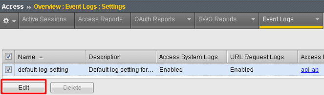
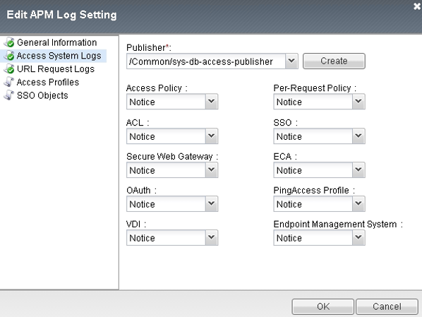
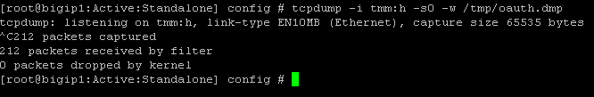
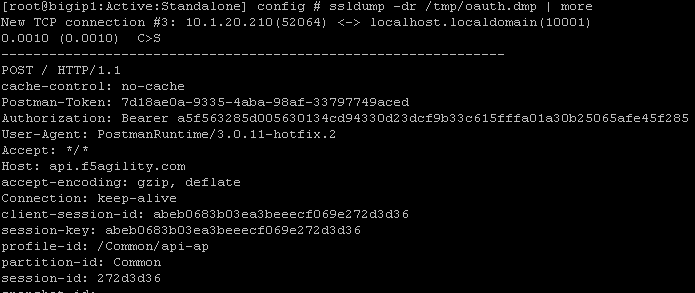

F5 Identity and Access Management Solutions > Archived Identity & Access Management Labs > Class 2: OAuth Federation with F5 Source | Edit on
Lab 4: Troubleshooting¶
Task 1: Logging Levels¶
You can turn up the logging levels specific to OAuth at Access -> Overview -> Event Logs -> Settings. Often times Informational is enough to identify issues. It is recommended to start there before going to debug. In particular pay attention session.oauth.client.last.errMsg as it contains the errors the other side reported back to you.


Task 2: Traffic Captures¶
You can actually examine what Big-IP has sent out when acting as a client/resource server. First, capture the traffic on the tmm channel:
tcpdump -i tmm:h -s0 -w /tmp/oauth.dmp
Then attempt your login using OAuth and ctrl-c the capture to end it. Now you need to ssldump the output:
ssldump -dr /tmp/oauth.dmp | more
Note
Your SSL Ciphers must support ssldump utility. Refer to the following link for further details https://support.f5.com/csp/article/K10209
Information: Logging at the Other Side¶
Sometimes the issue is not at your end and some providers have their own logging and reporting you can leverage. As an example, Google has a dashboard that reports errors.
Information: The Browser¶
Although a lot of the critical stuff is passed back and forth directly without your browser being involved, you can at least validate the browser portions of the transaction are good (e.g. are you passing all the values you should, example below for Google).